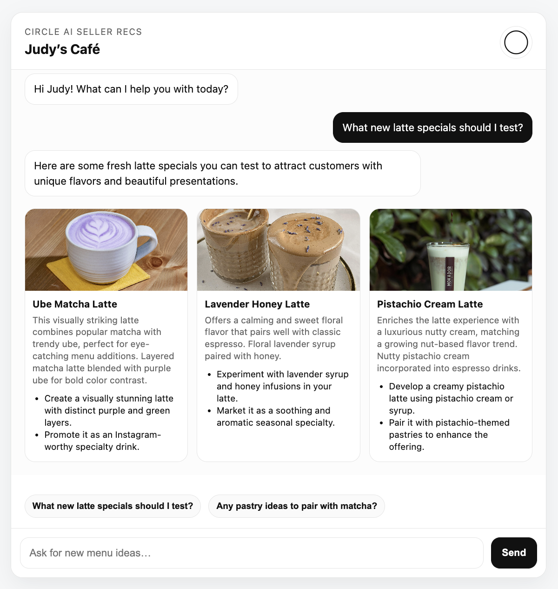
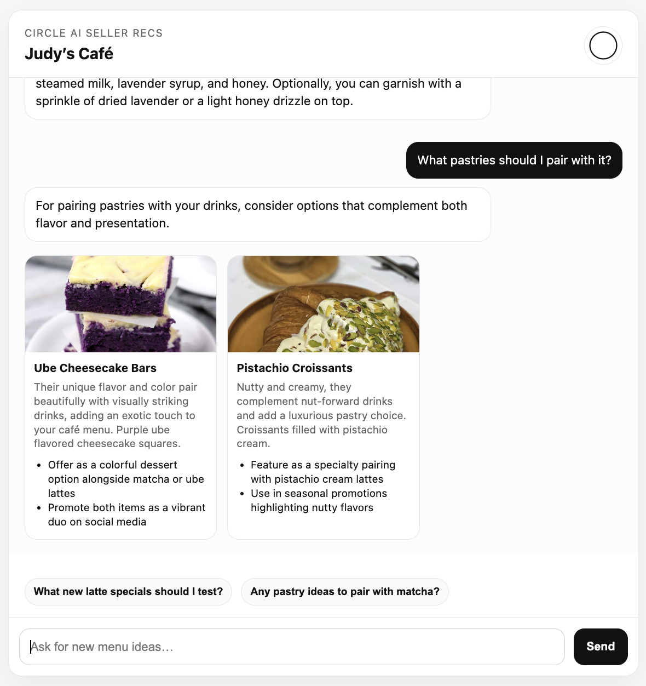
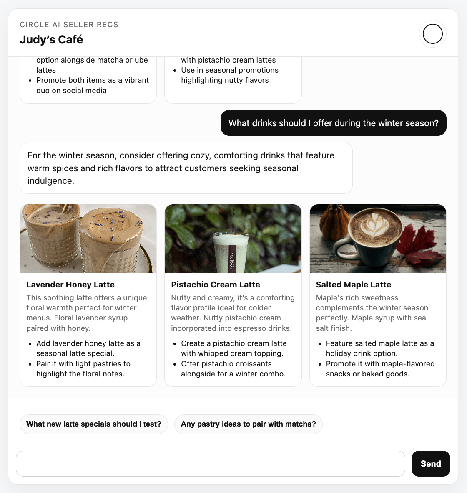

Hey, I’m Letty.
I’m a consultant, data analyst, and product-minded problem solver based in NYC.
Circle AI Seller Recs
Circle AI Seller Recs is a conversational decision-support prototype designed to help small retailers discover and operationalize trending product ideas. It intelligently shifts between trend-driven recommendations and practical business guidance, demonstrating how AI can function as a modular decision layer rather than a static chatbot.
In this view, recommendations are drawn exclusively from a predefined trend dataset, preventing hallucinated or irrelevant suggestions. The assistant adheres to structured output rules, ensuring each card includes summary, relevance, and execution steps.
When the user asks an operational question (e.g., ingredients for a specific drink), the assistant switches into advisory mode and suppresses visual cards entirely. The response remains conversational and practical. This dual-mode behavior reflects thoughtful UX design: the interface avoids unnecessary visual clutter when ideation is not required.

Here, the assistant moves beyond beverages and into complementary revenue opportunities, recommending pastry pairings that enhance both flavor and presentation. The card structure ensures suggestions remain consistent, actionable, and visually scannable.
When the user asks for seasonal guidance, the system shifts into ideation mode, generating structured trend cards instead of a simple text response. Each card contains a summary, relevance context, and actionable next steps, transforming abstract trends into operational menu experiments.
Potential Applications
In a production environment, this system could integrate real-time social listening signals by surfacing emerging flavors, aesthetic movements, seasonal conversations, and local neighborhood buzz, and merge them with internal sales data.
By combining trend velocity, review sentiment, weather patterns, and event data, the assistant could recommend menu shifts and limited-time offerings aligned with what customers are actively responding to in the moment.
Rather than reacting to trends after they peak, sellers could proactively test, bundle, and promote items informed by live cultural signals and performance metrics. Over time, this evolves into an adaptive intelligence layer — helping small retailers translate social insight into operational action, from menu development to inventory planning and on-the-go decision-making.
My Background
I began my career studying apparel and graphic design, bringing ideas to life through product development before transitioning into analytics and consulting.
Today, I focus on trend intelligence, workflow automation, and building systems that translate cultural insight into structured, operational outputs.